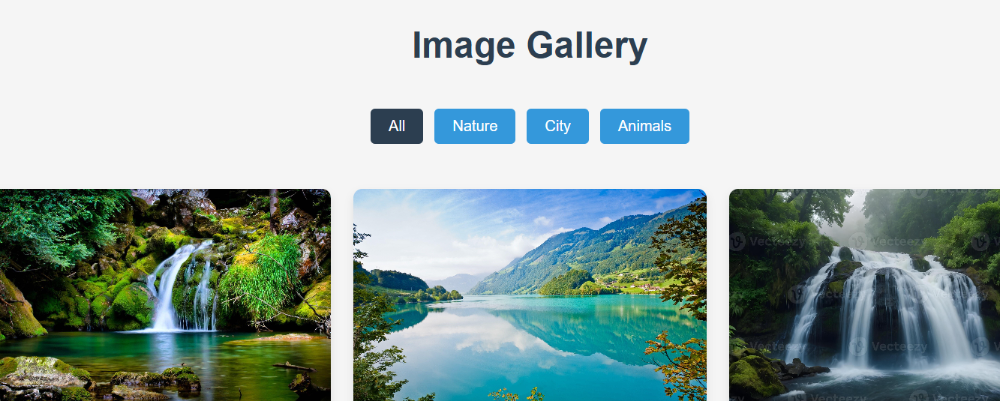
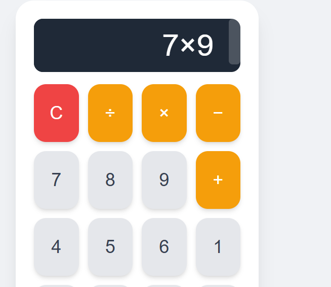

Hello, I'm Zaib-un-nisa
I'm a passionate Web Developer, UI/UX Designer with a knack for creating engaging and efficient solutions. With a background in Computer Science, I enjoy transforming complex ideas into user-friendly applications and experiences. I'm always eager to learn new technologies and contribute to innovative projects.
My Skills 🚀
Frontend
- JavaScript (ES6+)
- React.js
- HTML5 & CSS3
- Tailwind CSS
- Responsive Design
Backend
- Node.js & Express.js
- RESTful APIs
- Database (MongoDB, PostgreSQL)
Tools & Others
- Git & GitHub
- Docker
- AWS (S3, EC2)
- UI/UX Design
- Agile Methodologies
My Projects ✨

Image gallery
Created an image gallery with different images and a hover effect to preview images.
HTML
CSS
JavaScript
View Project

Basic Calculator
basic calculator with airthmetic four operations and on output display.
HTML
CSS
JavaScript
View Project
Scientific Calculator
Designed a scientific calculator using html and javascript with logical functions like trignometry and log.
Next.js
Markdown
CSS Modules
View Project